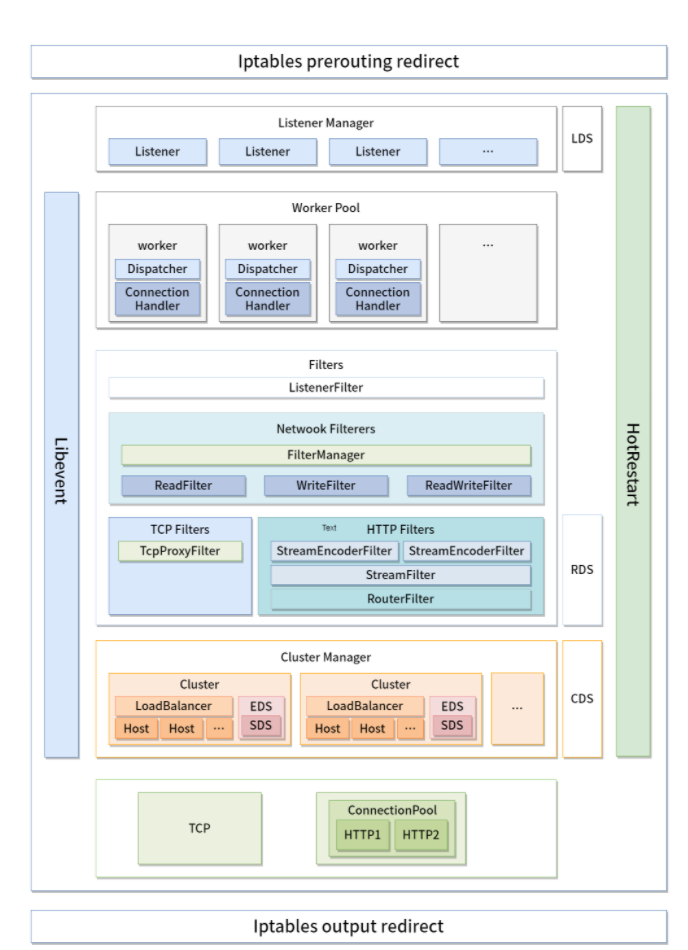
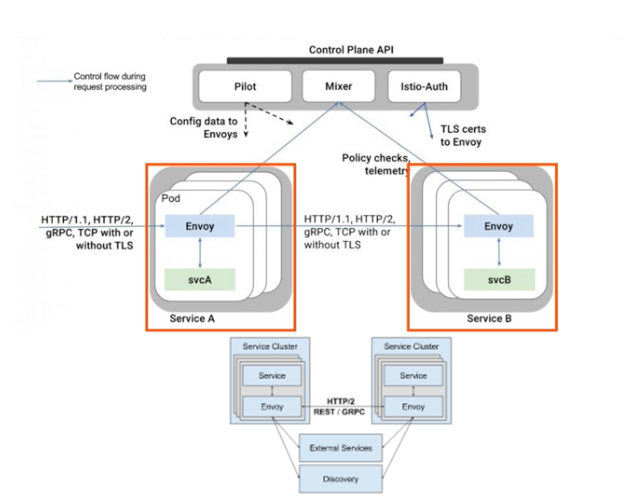

第二节 最常用的数据面 Envoy介绍
Envoy 是专为大型现代 SOA（面向服务架构）架构设计的 L7 代理和通信总线，它既可以作为 Service Mesh 中的数据面使用，也可以作为入口网关层使用，可以通过 xDS API 控制 Envoy 的监听、路由、负载均衡等行为。
1、核心功能


- 高性能设计：采用 C++ 编写，拥有良好的四层、七层代理性能，在 8 核的机器上，HTTP 代理可以达到 10w 的 QPS，gRPC 可以达到 15w QPS，完全满足了 Service Mesh 中 Sidecar 的应用场景。
- Filter 架构：可以在四、七层编写 Filter 以扩展 Envoy 的功能，比如监听过滤器、四层网络过滤器，以及七层过滤器。不过 Envoy 支持最完善的还是HTTP 过滤器，支持了限流、路由转发、故障注入等多种服务治理功能，
- 良好的 HTTP/2 支持：随着 gRPC 框架的流行以及边缘层网络性能的要求提升，HTTP/2 越来越被重视。Envoy 原生支持 HTTP/2，可以在 HTTP 和 HTTP/2 之间做转换。比如在 Sidecar 模式中，无论应用协议是 HTTP 还是 HTTP/2，Envoy 之间默认使用 HTTP/2 通信，这样极大提升了服务性能和稳定性，避免了 HTTP 频繁建立连接带来的消耗和不稳定性。
- 多种协议支持：不仅支持 HTTP 和 HTTP/2，随着社区的发展，Thrift、gRPC、MongoDB、Redis、MySQL 等多种网络协议都被支持，甚至可以使用 Envoy 做 Redis 的 Mesh 方案，用来代替流行的 Redis 中间件。
- 可观测性：支持强大的统计系统。日志、Metrics、链路追踪都有良好的支持。
- 边缘网关：Envoy 本身就是一个高性能的网络代理组件，完全可以作为入口网关层使用，在 Kubernetes 中，也可以作为 Egress 和 Ingress 使用。
- 服务发现：和其他常见的网络代理软件不同，Envoy 默认支持服务发现组件。Envoy 使用了一套xDS 的动态 API，获取服务的后端节点并实时更新，结合 Envoy 强大的负载均衡器，可以做到最终一致性。
- Wasm 扩展：Envoy 在最近的 1.17 版本增加了对 Wasm 的支持。Wasm 全称为 WebAssembly，最早用在浏览器端用来解决 JavaScript 性能问题和大型项目团队协作问题。近些年，它开始在一些后端技术上使用，用来代替 Lua，作为核心系统的扩展方式。因为 Wasm 可以使用多种语言进行开发，所以方便对核心系统进行扩展，不用担心语言问题。当然相对于原生的 C++ 扩展方式，它大概有 3 成的性能损耗。
2、架构设计
下图是 Envoy 架构的设计图，从图中我们可以看到入流量经过 Iptables 劫持被转发到了 Envoy 的端口，Envoy 通过监听端口创建连接，提供七层代理服务

- Iptable：通过 Iptable 劫持，将入口和出口流量都转发到 Envoy 上，达到劫持流量的目的。
- Listener：Envoy 通过建立多个监听器提供不同的服务。
- 比如通过监听的两个端口分别负责 Sidecar 模式的出流量和入流量，Sidecar 多使用这种设计，这样可以简化编程逻辑，也可以增强 Filter 的通用性。如果提供不同协议，Envoy 也会建立不同的端口来提供服务。
- Worker：每个 Listener 维护一个对应的 Worker Pool，Envoy 为每个逻辑处理器创建一个 Worker 线程，当我们在一个新的端口启动一个新的 server 时，Envoy 也会根据
-concurrency创建对应的 Worker 线程，要注意启动太多的 worker 线程并不一定是好事，特别是在 Sidecar 模式，我们并不会分配过多的逻辑核心给到 Sidecar，创建过多的 Worker 线程可能导致每个 Worker 线程维护的连接变多，Upstream 压力过大。 - Filters：可以理解为中间件，通过 Filter，可以做到四层和七层的流量过滤，支持服务治理需要的限流、熔断等功能。
- Cluster Manager：流量经过 Router，识别出需要转发的 Cluster，通过 Cluster Manager 进行服务发现和负载均衡等功能。
- Upstream：Upstream 维护了 EndPoint 的连接池，通过负载具衡器，将流量转发到合适的 EndPoint 上面。

Envoy 作为 Sidecar 使用时，需要和服务部署在同一台机器或者 Pod 中，用户访问其他服务时，流量会被自动劫持到 Envoy 中。
下图是 Productpage 服务通过 HTTP 协议，调用 review 服务的过程。

- 通过 Iptables 对流量进行劫持，将 Productpage 访问 Reviews 的流量转发到 Envoy 的出流量 15001 端口上。
- Envoy 先根据
virtual_hosts进行匹配，再通过路由匹配，发现路由对应的 Cluster，通过服务发现找到 Cluster 对应的 EndPoint，将流量转发到10.40.0.15:9080的 Pod 上。 - Reviews 的 Pod 通过 Iptables 对流量进行劫持，将流量劫持到 Envoy 的入流量端口 15006 上。
- Envoy 将本地流量转发到对应的本地地址
127.0.0.1:9080，这里不需要对流量进行识别，因为流量被转发到入流量端口 15006 上，这个端口的配置用于本地流量的转发。 - 到这里整个 Sidecar 的流量出入过程就结束了。出入流量都经由 Envoy，最终被正确的转发到了 Reviews 的 Pod 上面。
2、静态配置
Envoy 的配置分为静态配置和动态配置，静态配置就是手动填写的配置，动态配置是指由 xDS API 获取的配置
如下代码，这里定义了 Listener 监听器，监听端口为 10000。
virtual_hosts 匹配所有域名，Routes 的匹配规则为所有 Path，也就是所有访问 10000 端口的请求都会被转发到 service_google 服务。
listeners:
- name: listener_0
address:
socket_address: { address: 0.0.0.0, port_value: 10000 }
filter_chains:
- filters:
- name: envoy.http_connection_manager
config:
stat_prefix: ingress_http
codec_type: AUTO
route_config:
name: local_route
virtual_hosts:
- name: local_service
domains: ["*"] // 匹配所有域名
routes:
- match: { prefix: "/" }// 匹配所有 path
route: { host_rewrite: www.google.com, cluster: service_google } // 将流量转发到 service_google 服务
http_filters:
- name: envoy.router
下面的配置是 service_google 服务的负载均衡器，连接超时时间，以及要转发的地址。
clusters:
- name: service_google
connect_timeout: 0.25s
type: LOGICAL_DNS
# Comment out the following line to test on v6 networks
dns_lookup_family: V4_ONLY
lb_policy: ROUND_ROBIN
hosts: [{ socket_address: { address: google.com, port_value: 443 }}]
tls_context: { sni: www.google.com }
3、边缘代理模式
Envoy 不仅可以用于 Sidecar 模式，也可以用作边缘网关，但是用作边缘网关层我们有一些注意事项，
3-1 HTTP 标头清理
一些外部传入的 header 可能会影响内部行为，应该统一做出清理操作，比如我们经常会用到的 x-forward-for，在反向代理中，未经过一层代理，都应该将代理的 IP 追加在 x-forward-for中，以保证通过 x-forward-for 可以获取最原始的 IP，如果有客户端恶意传输 x-forward-for，不做清除操作可能会导致拿到错误的客户端 IP。
在 Envoy 中可以通过 use_remote_address 设置为 true 来清理 HTTP 标头。
3-2 超时控制
超时控制分为连接超时、流超时和路由超时。
这些超时控制不仅在边缘网关模式中需要注意，在 Sidecar 模式也需要注意，一些不合理的超时可能会引起服务的雪崩。虽然在内网服务调用时一般都会设置默认超时，但 Sidecar 应该设置一个默认的超时时间，避免服务没有设置有效超时的情况引起的问题。
3-4 连接超时
Envoy 为 HTTP 服务提供了空闲连接超时时间的设置，空闲超时是指一个连接在接收到请求后，会设置 TCP 的 idle Timeout 的参数，一段时间内没有收到代理服务的响应请求，则会断开连接。Envoy 默认的空闲超时是 1 小时。连接超时对所有流生效，连接一旦断开，所有流处理也会中断。
3-5 流超时
流是 HTTP/2 中的概念，在 HTTP/1 中没有流的概念，Envoy 通过将 HTTP 连接对应到流模式，统一进行处理。
HTTP 连接管理器 stream_idle_timeout 默认超时时间为 5 分钟，推荐对所有流设置合理的超时时间，这个时间就是接收请求到返回数据的处理时间，如果没有特殊需求，建议设置为 10s，默认超时时间偏长。如果触发此超时时间，则会出发 504 Gateway Timeout 的错误码。
3-6 路由超时
除了设置全局的流超时外，还可以设置路由层面的超时，为某些请求设置特殊的配置，一些请求可能需要更快的响应速度，所以要设置较短的超时时间，这个时候只要在路由层面设置即可，比如针对某些 Path 设置更短的超时时间。
3-7 连接限制
Envoy 可以针对全局或者监听器设置连接限制。一般单一服务器可承载的并发连接数有限，根据线上的峰值连接运行情况，设置合理的连接设置，可以避免因服务出问题时响应过慢，大量新建 HTTP 连接击垮 Envoy 的情况。
Envoy 不仅可以作为 Service Mesh 中的 Sidecar 使用，也可以作为边缘网关使用，它的本质就是一个反向代理服务器，Nginx、HAProxy 能做的事情 Envoy 也可以做得很好。